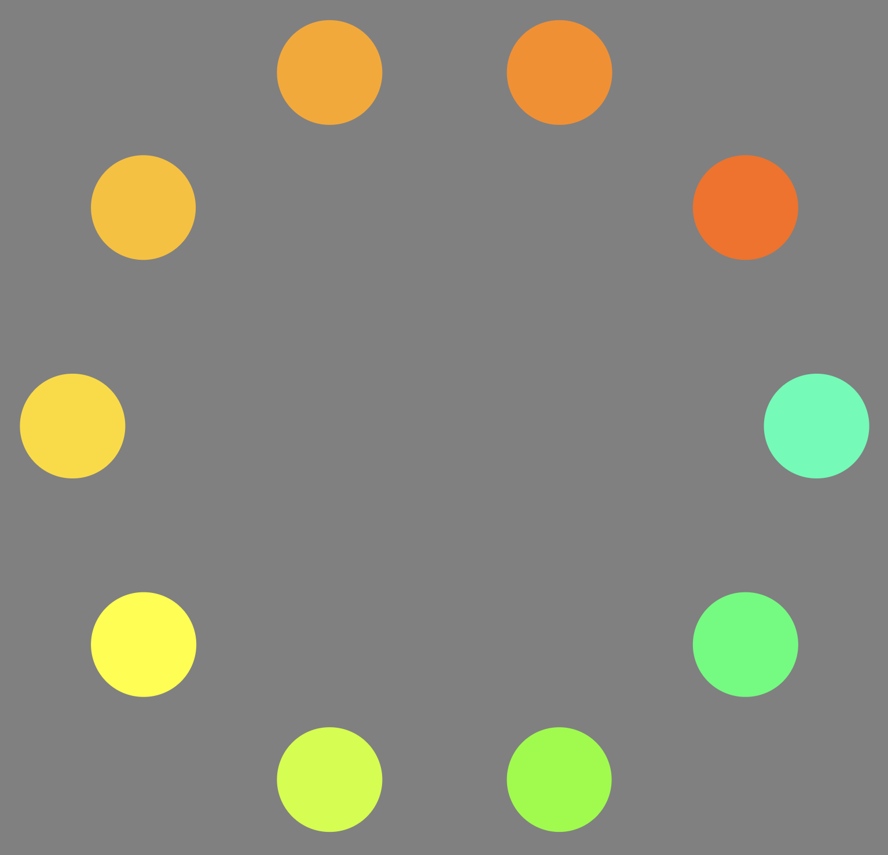

<!DOCTYPE html>
<html>
    <head>
        <title>:) Unique Hue Selection (okhsv)</title>
        <script src="jspsych-psychophysics-3.1.0/jspsych-dist/dist/jspsych.js"></script>
        <script src="jspsych-psychophysics-3.1.0/jspsych-dist/dist/plugin-html-button-response.js"></script>
        <script src="jspsych-psychophysics-3.1.0/jspsych-dist/dist/plugin-html-keyboard-response.js"></script>
        <script src="jspsych-psychophysics-3.1.0/jspsych-dist/dist/plugin-survey.js"></script>
        <script src="jspsych-psychophysics-3.1.0/jspsych-dist/dist/plugin-call-function.js"></script>
        <script src="jspsych-psychophysics-3.1.0/jspsych-dist/dist/plugin-fullscreen.js"></script>
        <script src="colorconversion.js"></script>
        <link rel="stylesheet" href="jspsych-psychophysics-3.1.0/jspsych-dist/dist/jspsych.css"></link>
        <link rel="stylesheet" href="https://unpkg.com/@jspsych/plugin-survey@0.1.1/css/survey.css">
        <link rel="stylesheet" href="button-response.css"></link>
    </head>
    <body></body>
    <script>
        
        /* GLOBAL VARIABLES */

        // Environement 
        var jsPsych = initJsPsych({
            on_finish: function() {
                jsPsych.data.displayData();
            }
        });
        var timeline = [];
        // Cross fixation time after each trial
        var fixation_black = {
            on_start: set_html_style_2,
            type: jsPsychHtmlKeyboardResponse,
            stimulus: '<div style="font-size:60px; color: white">+</div>',
            choices: "NO_KEYS",
            trial_duration: 1000,
        };
        var fixation_grey = {
            type: jsPsychHtmlKeyboardResponse,
            stimulus: '<div style="font-size:60px;">+</div>',
            choices: "NO_KEYS",
            trial_duration: 1000,
        };
        var fixation_grey2 = {
            type: jsPsychHtmlKeyboardResponse,
            stimulus: '<div style="font-size:60px;">+</div>',
            choices: "NO_KEYS",
            trial_duration: 500,
        };

        /* FUNCTIONS */

        // Background color
        function set_html_style_1 () {
            document.body.style.backgroundColor = 'rgb(255, 255, 255)';
        }
        function set_html_style_2 () {
            document.body.style.backgroundColor = 'rgb(0, 0, 0)';
        }
        /* Convert from HSV to HSL
        * hsvH: hue
        * hsvS: saturation
        * hsvV: value
        */
        function hsv2hsl(hsvH, hsvS, hsvV) {
            // Saturation cannot be more than 100
            if (hsvS > 100) {hsvS = 100;}
            const hslL = (200 - hsvS) * hsvV / 100;
            const [ hslS, hslV ] = [
                hslL === 0 || hslL === 200 ? 0 : hsvS * hsvV / 100 / (hslL <= 100 ? hslL : 200 - hslL) * 100,
                hslL * 5 / 10,
            ];
            return [ hsvH, hslS, hslV ];
        }
        /* Calculates a new hue according to the  previous selected saturation 
        * alpha: new angle
        * 60 degrees: yellow hue
        * 100 maximum saturation
        * 120: angle from new yellow to red
        * Formula: (100 / sin(120)) == (8 / sin(60 - alpha));
        */
        function new_hue (pre_sat, pre_hue) {
            var sat = Math.abs(pre_sat);
            // Change into radians
            var angle_left = 120 * (Math.PI / 180); 
            var angle_yellow = 60 * (Math.PI / 180);
            // Calculate the new hue angle
            var left = 100 / Math.sin(angle_left); 
            var alpha = angle_yellow - Math.asin(sat / left); 
            // Change into degrees
            var hue = alpha * (180 / Math.PI); 
            // Depending on the previous green or red hue selection
            if (pre_hue > 0) {  // When previous is green
                return (Math.round((120 - hue)));
            } else {      
                return Math.round(hue);
            }
        }
        /* HTML pure hue instructions before the trial
        color0: pure hue
        color1: first neither 
        color2: second neither
        */
        function html_color_black (color0, color1, color2) {
            var instructions_color = {
                type: jsPsychHtmlButtonResponse,
                on_start: set_html_style_2,
                stimulus: '<div class="text_welcome_black">In this trial, you are going to choose a <strong>neutral ' + color0 + "</strong>. A " + color0 + " neither " + color1 + " nor " + color2 + ", just neutral.<p> There is no right or wrong answer</p><p>Press start to begin!</p></div>",
                choices: ['START'],
            }
            return instructions_color;
        }
        /* HTML neutral grey instructions before the trial
        color0: neutral grey
        color1: first neither 
        color2: second neither
        */ 
        function html_color_grey (color0, color1, color2) {
            var instructions_color = {
                type: jsPsychHtmlButtonResponse,
                on_start: function () {
                    var back_sat = jsPsych.data.getLastTrialData().values()[0].greyBY_average_sat;
                    var back_hue = jsPsych.data.getLastTrialData().values()[0].greyBY_average_hue;
                    var hsl = hsv2hsl(back_hue, back_sat, 50);
                    var h = Math.round(hsl[0]);
                    var s = Math.round(hsl[1]);
                    var l = Math.round(hsl[2]);
                    document.body.style.backgroundColor = 'hsl(' + h + ', ' + s + '%,' + l + '%)';
                },
                stimulus: '<div class="text_welcome">In this trial, you are going to choose a <strong> ' + color0 + "</strong>. A " + color0 + " neither " + color1 + " nor " + color2 + ".<p> There is no right or wrong answer</p><p>Press start to begin!</p></div>",
                choices: ['START'],
            }
            return instructions_color;
        }
        /* Neutral grey annulus calculation and print
        hsv_array: hue specifications in hsv color space
        hsl_array: hue specifications in hsl color space
        hue_answers: saves the observer grey hue selections
        sat_answers: saves the observer grey saturation selections
        val_answers: saves the observer grey value selections
        center: halfway of the annulus
        */
        function trial_grey (hsv_array, hsl_array, hue_start, hue_answers, sat_answers, val_answers, center) {
            var hsl_specifications = hsl_array; 
            var hue_specifications = hsv_array;
            var count = 0;
            // Trial instructions
            var trial_grey = {
                type: jsPsychHtmlButtonResponse,
                stimulus: '',
                choices: ['','','','','','','','','',''], 
                prompt: function () {
                        if (hue_start[0] == 120) {
                            html = '<div class="text" style="color: white"><p>Choose a <strong>neutral grey</strong>,</p><p>A <strong>grey</strong> neither Red nor Green</p></div>';
                        } else {
                            html = '<div class="text" style="color: white"><p>Choose a <strong>neutral grey</strong>,</p><p>A <strong>grey</strong> neither Yellow nor Blue</p></div>';
                        }
                    return html
                },
                button_html: function () {
                    // HSV color space
                    var hsvH = hsv_array[0];   
                    var hsvS = hsv_array[3];    
                    var hsvV = hsv_array[4];    
                    var y = hsv_array[1];       
                    var z = hsv_array[2];       
                    var hslS = hsl_array[1];
                    var hslL = hsl_array[2];
                    var hslH = hsl_array[0];
                    var button_array = [];
                    // From the center the hue changes clockwise and counterclockwise
                    for(var i = 0; i < 10; i++){
                        if (hsvS > center) {
                            hsvH = hue_start[0];
                        } else if (hsvS == center) {
                            hsvH = hue_start[1]; 
                        } else if (hsvS < center) {
                            hsvH = hue_start[2];
                        }
                        // Next patch location
                        z = z + 36;
                        // Patch print
                        button_array[i] =   
                            '<button class="button_circle" style="background-color: hsl(' + hslH + ', ' + hslS + '%, ' + hslL + '%); transform: rotate(' + z + 'deg) translate(321.3px) rotate(-' + z + 'deg);">%choice%</button>';
                        // Color specifications for the next color patch of the annulus
                        hsvS = hsvS - y;                                            // The saturation decreases in the hsv color space
                        hslH = Math.round(hsv2hsl(hsvH, Math.abs(hsvS), hsvV)[0]);  // Change into HSL color space
                        hslS = Math.round(hsv2hsl(hsvH, Math.abs(hsvS), hsvV)[1]);  
                        hslL = Math.round(hsv2hsl(hsvH, Math.abs(hsvS), hsvV)[2]);  
                    }
                    return button_array
                }, 
                on_finish: function(data) {
                    // Save the previous selection
                    hue_specifications[3] = hue_specifications[3] - (hue_specifications[1] * data.response); 
                    sat_answers[count] = hue_specifications[3];
                    if (sat_answers[count] > center) {
                        hue_answers[count] = hue_start[0];
                    } else if (sat_answers[count] == center) {
                        hue_answers[count] = hue_start[1];
                    } else { 
                        hue_answers[count] = hue_start[2];
                    }
                    // Color values for the next trial
                    hue_specifications[1] = hue_specifications[1] - 2;  // Zoom in effect
                    hue_specifications[3] = hue_specifications[3] + (hue_specifications[1] * jsPsych.randomization.randomInt(2,7));                 // Random start hue
                    hsl_specifications[0] = Math.round(hsv2hsl(hue_specifications[0], Math.abs(hue_specifications[3]), hue_specifications[4])[0]);  // Change into hsL color space
                    hsl_specifications[1] = Math.round(hsv2hsl(hue_specifications[0], Math.abs(hue_specifications[3]), hue_specifications[4])[1]); 
                    hsl_specifications[2] = Math.round(hsv2hsl(hue_specifications[0], Math.abs(hue_specifications[3]), hue_specifications[4])[2]);   
                    // Angle start position for the next trial
                    if (count  % 2 == 0) {
                        hue_specifications[2] = 18;
                    } else {
                        hue_specifications[2] = 0;
                    }
                    count += 1;
                },
            };
            return trial_grey;
        }
        /* Pure hue annulus calculation and print
        hue_array: hue specifications
        answers_array: saves the observer hue selections
        */
        function trial (hue_array, answers_array) {
            var hue_specifications = hue_array;
            var count = 0;
            var trial = {
                type: jsPsychHtmlButtonResponse,
                stimulus: '',
                choices: ['','','','','','','','','',''], 
                // Trial instructions
                prompt: function () {
                        if (hue_array[4] == 0) {
                            html = '<div class="text2"><p>Choose a <strong>red</strong>,</p><p>a <strong>Red</strong> neither Bluish (like Red-Magenta) </p><p>nor Yellowish (like Yellow-Red)</p></div>';
                        } else if (hue_array[4] == 120) {
                            html = '<div class="text3"><p>Choose a <strong>green</strong>,</p><p>a <strong>Green</strong> neither Yellowish (like Green-Yellow) </p><p>nor Bluish (like Cyan-Green)</p></div>';
                        } else if (hue_array[4] == 240) {
                            html = '<div class="text4"><p>Choose a <strong>blue</strong>,</p><p>a <strong>Blue</strong> neither Greenish (like Cyan-Green) </p><p>nor Reddish (like Magenta-Blue)</p></div>';
                        } else if (hue_array[4] == 300) {
                            html = '<div class="text5"><p>Choose a <strong>orange</strong>,</p><p>a <strong>Orange</strong> neither Reddish (like Red) </p><p>nor Yellowish (like Yellow)</p></div>';
                        } else if (hue_array[4] == 60) {
                            html = '<div class="text6"><p>Choose a <strong>yellow</strong>,</p><p>a <strong>Yellow</strong> neither Greenish (like Green-Yellow) </p><p>nor Reddish (like Yellow-Red)</p></div>';
                        } 
                    return html
                },
                button_html: function () {
                    random_rot = jsPsych.randomization.randomInt(0,5);
                    var x = hue_array[0];
                    var y = hue_array[1];
                    var z = hue_array[2] + (36 * random_rot); // random rotation along the annulus
                    var k = hue_array[3];
                    var w = hue_array[5];
                    var h = x/360;
                    var s = k/100;
                    var v = w/100;
                    var rgb = okhsv_to_srgb(h,s,v);
                    var r = Math.round(rgb[0]);
                    var g = Math.round(rgb[1]);
                    var b = Math.round(rgb[2]);
                    var button_array = [];
                    // Patch print
                    for(var i = 0; i < 10; i++){
                        button_array[i] =   
                            '<button class="button_circle" style="background-color: rgb(' + r + ', ' + g + ',' + b + '); transform: rotate(' + z + 'deg) translate(321.3px) rotate(-' + z + 'deg);">%choice%</button>';
                        // Control the shown patches in 3 color spaces (console)
                        var hsv = rgb_to_hsv(r, g, b);
                        var h = hsv[0]*360;
                        var s = hsv[1]*100;
                        var v = hsv[2]*100;
                        console.log(i + '--------------------HSV-------------------');
                        console.log('Hue hsv: ' + h);
                        console.log('Sat hsv: ' + s);
                        console.log('Value hsv: ' + v);
                        var okhsv = srgb_to_okhsv(r, g, b);
                        var h_ok = okhsv[0]*360;
                        var s_ok = okhsv[1]*100;
                        var v_ok = okhsv[2]*100;
                        console.log(i + '----------------OK-HSV--------------------');
                        console.log('Hue OKhsv: ' + h_ok);
                        console.log('Sat OKhsv: ' + s_ok);
                        console.log('Value OKhsv: ' + v_ok);
                        console.log(i + '----------------RGB-----------------------');
                        console.log('R: ' + r);
                        console.log('G: ' + g);
                        console.log('B: ' + b);
                        // Update the values for the next patch
                        x = x - y;
                        z = z + 36;
                        h = x/360;
                        s = k/100;
                        v = w/100;
                        rgb = okhsv_to_srgb(h,s,v);
                        r = Math.round(rgb[0]);
                        g = Math.round(rgb[1]);
                        b = Math.round(rgb[2]);
                    }
                    return button_array
                }, 
                // Change the saved data considering the rotation
                on_finish: function(data) { 
                    hue_specifications[0] = hue_specifications[0] - (hue_specifications[1] * data.response);    // Angle hue
                    random_rot = jsPsych.randomization.randomInt(0,5);                                          // Random physical rotation
                    random_hue = jsPsych.randomization.randomInt(2,7);                                          // Random hue rotation
                    hue_answers[count] = hue_specifications[0];                                                 // Save the hues 
                    answers_array[count] = hue_answers[count];
                    hue_specifications[1] = hue_specifications[1] - 6;                                          // Shift in steps of 6 degrees 
                    hue_specifications[0] = hue_specifications[0] + (hue_specifications[1] * random_hue);       // Rotate three times + count
                    // Angle start position for the next trial
                    if (count  % 2 == 0) { 
                        hue_specifications[2] = 18 + (36 * random_rot);                                         
                    } else {
                        hue_specifications[2] = 0; + (36 * random_rot); 
                    }
                    count += 1;
                },
            };
            return trial;
        }

        /* 
        ------------------
         TIMELINE STARTS
        ------------------
        */

        /* WELCOME */
        const welcome = {
            type: jsPsychHtmlButtonResponse,
            on_start: set_html_style_1,
            stimulus: `
            <div class="text_welcome">
            <p> Welcome to this experiment! </p> 
            <p> :) </p></div>
            `,
            choices: ['Continue'],
        }
        timeline.push(welcome);
        // Observer information questions
        var pre_questions = {
            type: jsPsychSurvey,
            pages: [
                [
                {
                    type: 'html',
                    prompt: 'Please, first answer the following questions:',
                },
                {
                    type: 'text',
                    prompt: "Nickname (make up a nickname that you can remember)", 
                    name: 'nickname',
                    textbox_columns: 5,
                    required: true,
                }, 
                {
                    type: 'multi-choice',
                    prompt: "Do you have Color Vision Deficiency?", 
                    name: 'CVD', 
                    options: ['Yes', 'No', 'I do not know'], 
                    required: true
                },
                {
                    type: 'multi-choice',
                    prompt: "What are your lighting conditions?", 
                    name: 'light', 
                    options: ['No light', 'Indoor', 'Outdoor', 'Mix'], 
                    required: true
                },
                {
                    type: 'text',
                    prompt: "How old are you?", 
                    name: 'age', 
                    textbox_columns: 5,
                    required: true,
                },
                {
                    type: 'multi-choice',
                    prompt: "Sex", 
                    name: 'sex', 
                    options: ['Female', 'Male'], 
                    required: true
                },
                {
                    type: 'text',
                    prompt: "Field of work", 
                    name: 'job', 
                    textbox_columns: 5,
                    required: true,
                },
                ]
            ],
        };
        timeline.push(pre_questions);
        // Instructions
        const instructions = {
            type: jsPsychHtmlButtonResponse,
            on_start: set_html_style_1,
            stimulus: `
            <div class="text_welcome">
            <p>In this experiment, you will be shown different annuli made by color patches as in the Figures. </p>
            <p>The experiment consists in two parts, first you will determine a neutral grey, meanwhile in the second part you will choose a pure color. </p>
            <p><strong>The task is subjetive. There is no right or wrong answer!</strong></p>
            <p>Answer what you think is most appropiate.</p>

            <div style='float: left;margin:-1% 12%;'></img>
            <p class='small'>Neutral grey annulus</p></div>
            <div style='float: right;margin:-1% 12%;'></img>
            <p class='small'>Pure color annulus</p></div>
            <p><br></p>
            </div>
            `,
            choices: ['Continue'] ,
        }
        timeline.push(instructions);
        const instructions2 = {
            type: jsPsychHtmlButtonResponse,
            on_start: set_html_style_1,
            stimulus: `
            <div class="text_welcome">
            <p>INSTRUCTIONS: </p>
            <p>The first block, <strong>Neutral Grey selection</strong>, is divided in two parts. 4 selections per part (2 X 4).</p>
            <p>In the first part you must choose a <a>neutral grey neither Red nor Green,</a></p>
            <p>and in the second part you must choose a <a>neutral grey neither Yellow nor Blue.</a></p>

            <div class="row2">
            <div class="column2">
                
                <p>Neutral grey: neither Red nor Green</p>
            </div>
            <div class="column2">
                
                <p>Neutral grey: neither Yellow nor Blue</p>
            </div>
            <p><br></p>
            </div>
            
            <p>The second block, <strong>Pure Hue selection</strong>, is divided in 5 parts. 6 pairs of selections per part (5 X 6 X 2).</p>
            <p>Each part corresponds with one different hue, being the hues red, green, blue, orange and yellow, in that order.</p>
            <p>You can see the <a>instructions under each Figure:</a></p>
            <div class="row">
            <div class="column">
                
                <p>Red: neither Bluish (like Red-Magenta) nor Yellowish (like Yellow-Red)</p>
            </div>
            <div class="column">
                
                <p>Green: neither Yellowish (like Green-Yellow) nor Bluish (like Cyan-Green)</p>
            </div>
            <div class="column">
                
                <p>Blue: neither Greenish (like Cyan-Green) nor Reddish (like Magenta-Blue)</p>
            </div>
            <div class="column">
                
                <p>Orange: neither Reddish (like Red) nor Yellowish (like Yellow)</p>
            </div>
            <div class="column">
                
                <p>Yellow: neither Greenish (like Green-Yellow) nor Reddish (like Yellow-Red)</p>
            </div>
            <p><br></p>
            </div>
            <p>It is important to consider <a>you are evaluating hues, shades of colors, no saturation.</a> Then, try to judge by the hue :)</p>
            <p>And remember, <strong>the task is subjetive. There is no right or wrong answer!</strong></p>
            `,
            choices: ['Continue'],
        }
        timeline.push(instructions2);
        // Enter full screen to start the experiment (It doesn't work in safari)
        var enter_fullscreen = {
            type: jsPsychFullscreen,
            fullscreen_mode: true
        }
        timeline.push(enter_fullscreen);
    
        /* 
        ------------------
           NEUTRAL GREY  
        ------------------
        */

        /* GREY BETWEEN RED AND GREEN */
        
        // Grey Red-Green trial specifications
        var greyRG_hsv = [
            120,    // Hue angle
            8,      // Saturation shift 
            0,      // First patch position
            32,     // Saturation
            50,     // Value and Lightness 
        ]
        // HSL color spaace
        var hsl_h = Math.round(hsv2hsl(greyRG_hsv[0], greyRG_hsv[3], greyRG_hsv[4])[0]);
        var hsl_s = Math.round(hsv2hsl(greyRG_hsv[0], greyRG_hsv[3], greyRG_hsv[4])[1]);
        var hsl_l = Math.round(hsv2hsl(greyRG_hsv[0], greyRG_hsv[3], greyRG_hsv[4])[2]);
        var greyRG_hsl = [
            hsl_h,
            hsl_s,
            hsl_l,
        ]
        var hue_RG = [
            120,    // Green hue HSL
            0,      // Center hue HSL
            0,      // Red hue HSL
        ]
        // Push instructions
        timeline.push(html_color_black('Grey', 'Red','Green'));
        // Grey Red-Green trial
        var center_RG = 0;   
        var greyRG_hue = [];
        var greyRG_sat = [];
        var greyRG_val = [];
        var grey_RG = {
            timeline: [fixation_black, trial_grey(greyRG_hsv, greyRG_hsl, hue_RG, greyRG_hue, greyRG_sat, greyRG_val, center_RG)],
            repetitions: 4,
            on_finish: function () {
                jsPsych.data.addProperties({greyRG_hue: greyRG_hue});
                jsPsych.data.addProperties({greyRG_sat: greyRG_sat});
                jsPsych.data.addProperties({greyRG_val: greyRG_val});
            }
        }
        // Grey Red-Green block repetitions
        var greyRG_average_sat = 0;
        var greyRG_average_hue = 0;
        var calc_sat = 0;
        var greyRG_average_hue = 0;
        var count_sat = 0;
        var count_div = 0;
        var repetitions_grey = {
            timeline: [grey_RG, fixation_black],
            repetitions: 1,
            on_finish: function (data) {
                // Previous selections
                var trial_sat_answers = jsPsych.data.getLastTrialData().values()[0].greyRG_sat;
                // Weighted average giving a value of 1 to the second input and 2 two the last two inputs
                // calc_sat = (trial_sat_answers[1 + count_sat] + (trial_sat_answers[2 + count_sat] * 2) + (trial_sat_answers[3 + count_sat] * 2)) / 5;
                // count_sat += 4; // we move 4 positions to select the next trial saturation values
                // Cumulative average
                // greyRG_average_sat = Math.round((greyRG_average_sat * count_div + calc_sat) / (count_div + 1));
                greyRG_average_sat = Math.round(trial_sat_answers[3]);
                // count_div += 1;
                // Adds the last greyRG_average_sat to the result
                jsPsych.data.addProperties({greyRG_average_sat: greyRG_average_sat});
                // Adds the hue of the averaged saturation to the data
                if (greyRG_average_sat > center_RG) {
                    jsPsych.data.addProperties({greyRG_average_hue: hue_RG[0]});
                    greyRG_average_hue = hue_RG[0];
                } else {
                    jsPsych.data.addProperties({greyRG_average_hue: hue_RG[1]});
                    greyRG_average_hue = hue_RG[1];
                }
                // Restart specifications
                greyRG_hsv[0] = 120;
                greyRG_hsv[1] = 8;
                greyRG_hsv[2] = 0;
                greyRG_hsv[3] = 32;
                greyRG_hsv[4] = 50;
                greyRG_hsl[0] = Math.round(hsv2hsl(greyRG_hsv[0], greyRG_hsv[3], greyRG_hsv[4])[0]);
                greyRG_hsl[1] = Math.round(hsv2hsl(greyRG_hsv[0], greyRG_hsv[3], greyRG_hsv[4])[1]);
                greyRG_hsl[2] = Math.round(hsv2hsl(greyRG_hsv[0], greyRG_hsv[3], greyRG_hsv[4])[2]);
                // Print all the values at the end of the last trial (HSV)
                var g_result_hue = jsPsych.data.get().select('greyRG_average_hue').values[0];
                var g_result_sat = jsPsych.data.get().select('greyRG_average_sat').values[0];
                // Print in console
                console.log('Grey RG (HSL) = [' + g_result_hue + ',' + Math. abs(g_result_sat) + ',50];');
            }
        }
        timeline.push(repetitions_grey);
        
        /* GREY BETWEEN BLUE AND YELLOW USING THE PREVIOUS SATURATION AND HUE SELECTION */
        
        // Push instructions
        timeline.push(html_color_black('Grey', 'Blue','Yellow'));
        // Grey Blue-Yellow trial specifications
        var greyBY_hsv = [];
        var greyBY_hsl = [];
        var greyBY_hsv_restart = [];
        var greyBY_hsl_restart = [];
        var hue_BY = [];
        var center_BY = 0;
        var updateBY_arrays = {
            type: jsPsychCallFunction,
            func: function () {
                var hue = jsPsych.data.getLastTrialData().values()[0].greyRG_average_hue;
                center_BY = Math.abs(jsPsych.data.getLastTrialData().values()[0].greyRG_average_sat);
                var next_sat = center_BY + 32;
                var next_hue = new_hue(center_BY, hue);
                // New hue pair
                hue_BY[0] = (300 - next_hue);
                hue_BY[1] = hue;
                hue_BY[2] = next_hue;
                // Grey specifications
                greyBY_hsv[0] = next_hue;
                greyBY_hsv[1] = 8;
                greyBY_hsv[2] = 0;
                greyBY_hsv[3] = next_sat;
                greyBY_hsv[4] = 50;
                // Grey specifications to restart the trial
                greyBY_hsv_restart[0] = next_hue;
                greyBY_hsv_restart[1] = 8;
                greyBY_hsv_restart[2] = 0;
                greyBY_hsv_restart[3] = next_sat;
                greyBY_hsv_restart[4] = 50;
                // Change into HSL color space
                greyBY_hsl[0] = Math.round(hsv2hsl(greyBY_hsv[0], greyBY_hsv[3], greyBY_hsv[4])[0]);
                greyBY_hsl[1] = Math.round(hsv2hsl(greyBY_hsv[0], greyBY_hsv[3], greyBY_hsv[4])[1]);
                greyBY_hsl[2] = Math.round(hsv2hsl(greyBY_hsv[0], greyBY_hsv[3], greyBY_hsv[4])[2]);
                // HSL specifications to restart the trial
                greyBY_hsl_restart[0] = Math.round(hsv2hsl(greyBY_hsv[0], greyBY_hsv[3], greyBY_hsv[4])[0]);
                greyBY_hsl_restart[1] = Math.round(hsv2hsl(greyBY_hsv[0], greyBY_hsv[3], greyBY_hsv[4])[1]);
                greyBY_hsl_restart[2] = Math.round(hsv2hsl(greyBY_hsv[0], greyBY_hsv[3], greyBY_hsv[4])[2]);
            }
        }
        timeline.push(updateBY_arrays);

        /* The Blue-Yellow trial can't be executed by calling the grey_trial function. 
        Then, it's necessary to make a new trial to use the previous observer answers */
        var greyBY_hue = [];
        var greyBY_sat = [];
        var count_BY = 0;
        var trial_grey_BY = {
            type: jsPsychHtmlButtonResponse,
            stimulus: '',
            choices: ['','','','','','','','','',''],
            prompt: function () {
                    html = '<div class="text" style="color: white"><p>Choose a <strong>neutral grey</strong>,</p><p>A <strong>grey</strong> neither Blue nor Yellow</p></div>';
            return html
            },
            button_html: function () {
                // HSV color space
                var hue_start = hue_BY;
                var center = center_BY;
                var hsvH = greyBY_hsv[0];   
                var hsvS = greyBY_hsv[3];   
                var hsvS_count = hsvS;
                var hsvV = greyBY_hsv[4];   
                var y = greyBY_hsv[1];      
                var z = greyBY_hsv[2];      
                var hslS = greyBY_hsl[1];
                var hslL = greyBY_hsl[2];
                var button_array = [];
                // From the center the hue changes clockwise and counterclockwise
                for(var i = 0; i < 10; i++){
                    // For keeping the hue red even when the new center is not equal to the previous center
                    if (hsvS_count > center) {
                        hsvH = hue_start[0];
                    } else if (hsvS_count < center) {
                        hsvH = hue_start[2];
                    } else if (hsvS_count == center) { // (hsvS_count >= (center - y + 1) & hsvS_count <= (center + y - 1)
                        hsvH = hue_start[1];
                    }
                    // Next patch location
                    z = z + 36;
                    // Patch print
                    button_array[i] =
                        '<button class="button_circle" style="background-color: hsl(' + hsvH + ', ' + hslS + '%, ' + hslL + '%); transform: rotate(' + z + 'deg) translate(321.3px) rotate(-' + z + 'deg);">%choice%</button>';
                    // The saturation increasses from the center clockwise and counterclockwise
                    hsvS_count = hsvS_count - y;    
                    if (hsvS_count < center) {      
                        hsvS = hsvS + y;
                    } else {
                        hsvS = hsvS_count;
                    }
                    hslS = Math.round(hsv2hsl(hsvH, Math.abs(hsvS), hsvV)[1]);   
                    hslL = Math.round(hsv2hsl(hsvH, Math.abs(hsvS), hsvV)[2]);    
                }
                return button_array
            },
            on_finish: function(data) {
                    // Save the previous selection
                    greyBY_hsv[3] = greyBY_hsv[3] - (greyBY_hsv[1] * data.response); 
                    greyBY_sat[count_BY] = greyBY_hsv[3];
                    if (greyBY_sat[count_BY] > center_BY) {
                        greyBY_hue[count_BY] = hue_BY[0];
                    } else if (greyBY_sat[count_BY] < center_BY) {
                        greyBY_hue[count_BY] = hue_BY[2];
                        var pos_from_center = (center_BY + Math.abs(greyBY_hsv[3])) / greyBY_hsv[1];
                        greyBY_hsv[3] = center_BY + (greyBY_hsv[1] * pos_from_center);
                        greyBY_sat[count_BY] = greyBY_hsv[3];
                        // Change the start hue
                        var container = hue_BY[0];
                        hue_BY[0] = hue_BY[2];
                        hue_BY[2] = container;
                    } else if (greyBY_sat[count_BY] == center_BY) { 
                        greyBY_hue[count_BY] = hue_BY[1];
                    }
                    // Color values for the next trial
                    greyBY_hsv[1] = greyBY_hsv[1] - 2;
                    greyBY_hsv[3] = greyBY_hsv[3] + (greyBY_hsv[1] * jsPsych.randomization.randomInt(2,7));
                    greyBY_hsl[0] = Math.round(hsv2hsl(greyBY_hsv[0], Math.abs(greyBY_hsv[3]), greyBY_hsv[4])[0]);    // Change into hsL color space
                    greyBY_hsl[1] = Math.round(hsv2hsl(greyBY_hsv[0], Math.abs(greyBY_hsv[3]), greyBY_hsv[4])[1]); 
                    greyBY_hsl[2] = Math.round(hsv2hsl(greyBY_hsv[0], Math.abs(greyBY_hsv[3]), greyBY_hsv[4])[2]);   
                    // Angle start position for the next trial 
                    if (count_BY  % 2 == 0) { 
                        greyBY_hsv[2] = 18;
                    } else {
                        greyBY_hsv[2] = 0;
                    }
                    count_BY += 1;
                }, 
        }
        // Grey Blue-Yellow trial
        var grey_BY = {
            timeline: [fixation_black, trial_grey_BY],
            repetitions: 4,
            on_finish: function () {
                jsPsych.data.addProperties({greyBY_hue: greyBY_hue});
                jsPsych.data.addProperties({greyBY_sat: greyBY_sat});
            }
        }
        // Grey Blue-Yellow block repetitions
        var greyBY_average_sat = 0;
        var greyBY_average_hue = 0;
        var calc_sat_BY = 0;
        var greyBY_average_hue = 0;
        var countBY_sat = 0;
        var countBY_div = 0;
        var repetitions_greyBY = {
            timeline: [grey_BY, fixation_black],
            repetitions: 1,
            on_finish: function (data) {
                // Previous selections
                var trial_sat_answers = jsPsych.data.getLastTrialData().values()[0].greyBY_sat;
                greyBY_average_sat = Math.round(trial_sat_answers[3]);
                // Adds the last greyRG_average_sat result
                jsPsych.data.addProperties({greyBY_average_sat: greyBY_average_sat}); 
                // Adds the hue of the average saturation result to the data
                if (greyBY_average_sat > center_BY) {
                    jsPsych.data.addProperties({greyBY_average_hue: hue_BY[0]});
                    greyBY_average_hue = hue_BY[0];
                } else if (greyBY_average_sat == center_BY) {
                    jsPsych.data.addProperties({greyBY_average_hue: hue_BY[1]});
                } 
                else if (greyBY_average_sat < center_BY) {
                    jsPsych.data.addProperties({greyBY_average_hue: hue_BY[2]});
                    greyBY_average_hue = hue_BY[2];
                }
                // Restart specifications HSV color space
                greyBY_hsv[0] = greyBY_hsv_restart[0];
                greyBY_hsv[1] = greyBY_hsv_restart[1];
                greyBY_hsv[2] = greyBY_hsv_restart[2];
                greyBY_hsv[3] = greyBY_hsv_restart[3];
                greyBY_hsv[4] = greyBY_hsv_restart[4];
                // Restart specifications HSL color space
                greyBY_hsl[0] = greyBY_hsl_restart[0];
                greyBY_hsl[1] = greyBY_hsl_restart[1];
                greyBY_hsl[2] = greyBY_hsl_restart[2];
                // Print all the values at the end of the last trial (HSV)
                var g_result_hue = jsPsych.data.get().select('greyBY_average_hue').values[0];
                var g_result_sat = jsPsych.data.get().select('greyBY_average_sat').values[0];
                // Print in console
                console.log('Grey = [' + g_result_hue + ',' + g_result_sat + ',50];');
            }
        }
        timeline.push(repetitions_greyBY);

        /* 
        ------------------
            UNIQUE RED  
        ------------------
        */

        // Red hue trial specifications
        var red_hue_specifications = [
            89,     // Hue angle 
            10,     // Hue shift 
            0,      // First patch position 
            100,    // Saturation 
            0,      // Hue degrees
            100,    // Value in ok-hsv 
        ]
        // Push instructions
        timeline.push(html_color_grey('Red', 'Bluish','Yellowish'));
        // Red annulus generation
        var hue_answers = [];
        var red_answers = [];
        var random_rot = 0;
        var red = {
            timeline: [fixation_grey, trial(red_hue_specifications, red_answers)],
            repetitions: 2,
            on_finish: function () {
                jsPsych.data.addProperties({hue_red_answers: red_answers});
            }
        }
        // Red hue block repetitions
        var trial_count_red = 0;       
        var repetitions_red = {
            timeline: [red, fixation_grey2],
            repetitions: 6,
            on_finish: function (data) {
                var trial_answers = jsPsych.data.getLastTrialData().values()[0].hue_red_answers;
                console.log('array: ' + trial_answers);
                red_hue = Math.round(trial_answers[1]); 
                if (red_hue < 0) {
                    red_hue = 360 + red_hue;
                }
                // Adds the average to the data
                jsPsych.data.addProperties({red_100_100: red_hue});
                // Restart the values for the next trial
                red_hue_specifications[0] = 89;
                red_hue_specifications[1] = 10;
                red_hue_specifications[2] = 0;
                // Change the saturation and the value 
                trial_count_red += 1;
                /* Saturation-Value combinations */
                if (trial_count_red == 1) {
                    // Save the result
                    red_hue_specifications[3] = 67;     // ok-hsv saturation
                    red_hue_specifications[5] = 100;    // ok-hsv value
                } else if (trial_count_red == 2) {
                    // Save the result
                    red_1 = (trial_answers[1 + 2]);
                    if (red_1 < 0) {
                        red_1 = 360 + red_1;
                    }
                    // Save the previous result
                    jsPsych.data.addProperties({red_67_100: red_1});
                    // Change the values for the next trial
                    red_hue_specifications[3] = 33;    
                    red_hue_specifications[5] = 100;
                } else if (trial_count_red == 3){
                    // Save the result
                    red_2 = (trial_answers[1 + 4]);
                    if (red_2 < 0) {
                        red_2 = 360 + red_2;
                    }
                    // Save the previous result
                    jsPsych.data.addProperties({red_33_100: red_2});
                    // Change the values for the next trial
                    red_hue_specifications[3] = 100;    
                    red_hue_specifications[5] = 50;
                } else if (trial_count_red == 4){
                    // Save the result
                    red_3 = (trial_answers[1 + 6]);
                    if (red_3 < 0) {
                        red_3 = 360 + red_3;
                    }
                    // Save the previous result
                    jsPsych.data.addProperties({red_100_50: red_3});
                    // Change the values for the next trial
                    red_hue_specifications[3] = 67;   
                    red_hue_specifications[5] = 50;
                } else if (trial_count_red == 5){
                    // Save the result
                    red_4 = (trial_answers[1 + 8]);
                    if (red_4 < 0) {
                        red_4 = 360 + red_4;
                    }
                    // Save the previous result
                    jsPsych.data.addProperties({red_67_50: red_4});
                    // Change the values for the next trial
                    red_hue_specifications[3] = 33;    
                    red_hue_specifications[5] = 50;
                } else if (trial_count_red == 6){
                    // Save the result
                    red_5 = (trial_answers[1 + 10]);
                    if (red_5 < 0) {
                        red_5 = 360 + red_5;
                    }
                    // Save the previous result
                    jsPsych.data.addProperties({red_33_50: red_5});
                }

            }
        }
        timeline.push(repetitions_red);

        /* 
        ADD HERE NEW HUES 
        (Same as the previous block, change hue_specifications)
        */

        /* 
        ------------------
               EXIT  
        ------------------
        */
        var exit_fullscreen = {
            type: jsPsychFullscreen,
            fullscreen_mode: false,
            delay_after: 0
        }
        timeline.push(exit_fullscreen);
        
        /* Push timeline */
        jsPsych.run(timeline);

    </script>
</html>